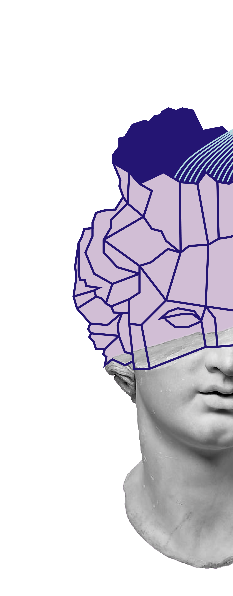

Нейроопера - это то место, где музыку исполняют не оперные певцы и музыканты, а ваш мозг. К голове посетителя подключается нейрогарнитура, считывающая нервные импульсы головного мозга и преобразующая их в мелодию, создавая уникальное музыкальное произведение.
